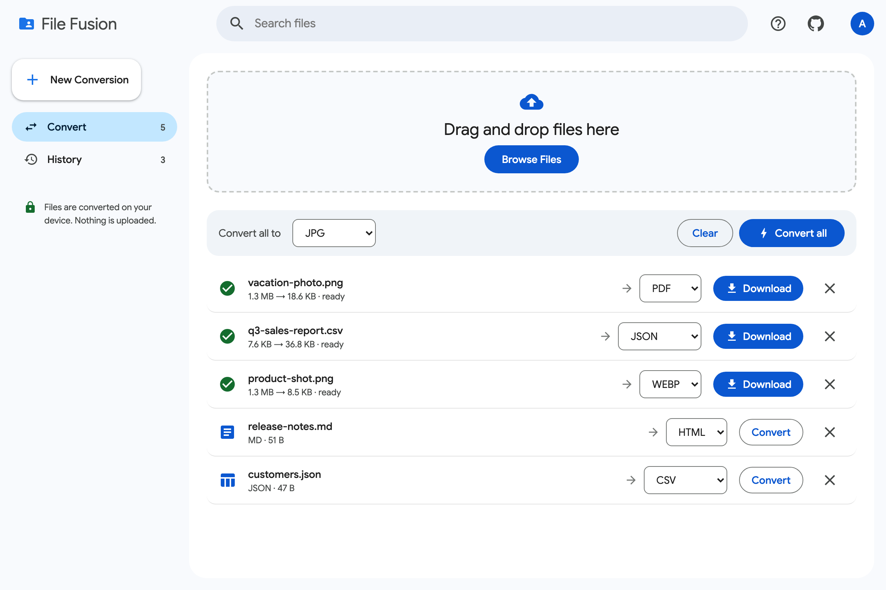

Images to PDF, PNG to JPG, CSV to JSON, Markdown to HTML and more. Free forever, no sign-up, no watermarks, and your files never leave your device.
or choose files · paste works too
Processed locally. Nothing is uploaded to any server.
Pick one to jump straight in, or drop any supported file into the converter.
Drag in one file or a whole batch. Paste images straight from your clipboard.
Choose a target per file, or convert everything to the same format at once.
Conversion happens instantly on your device. No upload, no queue, no email.

Other converters upload your files to their servers. File Fusion converts them in your browser, so sensitive documents stay with you.
No upload or download wait. Conversions finish as fast as your device can run them.
No daily limits, no watermarks, no "pro" upsell. The code is open source on GitHub.
Yes. There are no limits, ads, or watermarks, and the source code is public on GitHub.
No. Every conversion runs in your browser on your own device. Your files are never sent to a server.
No. You can convert files right away. Signing in with Google is optional and keeps your conversion history separate per account on this device.
Images (PNG, JPG, WEBP, GIF, SVG, BMP, AVIF) to PNG, JPG, WEBP or PDF; CSV, TSV and JSON to JSON, CSV, TSV, Markdown, HTML, YAML or XML; Markdown to HTML or text; HTML to text or Markdown; and plain text to HTML or PDF.
Yes. Drop in as many files as you like and use "Convert all" to process the whole batch.
It takes less time than reading this sentence.